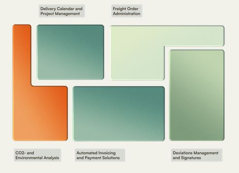

Prosjektbeskrivelse
Sammen med andre studenter fra UIA skal vi i løpet av semesteret delta i utviklingsprosessen av programvaren hos Swipload. Vi vil bli kjent med ulike verktøy de benytter, som Svelte, samt deres prosesser for å hjelpe kunder med registrering, logistikk og håndtering av transport via deres programvare.
